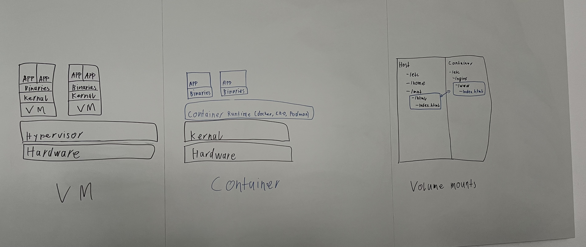
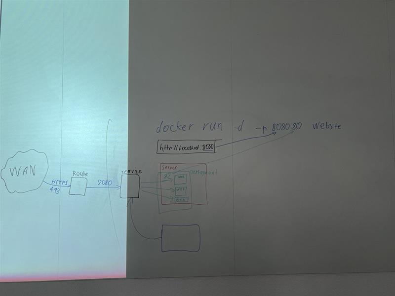
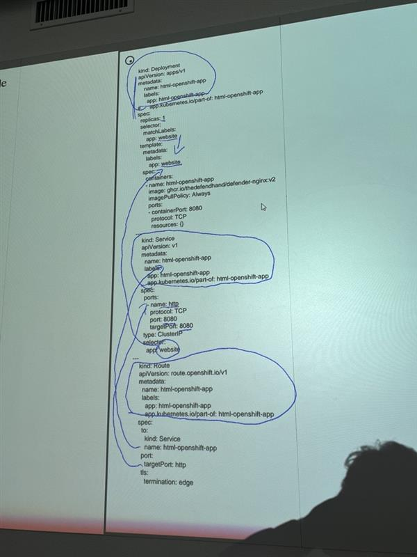
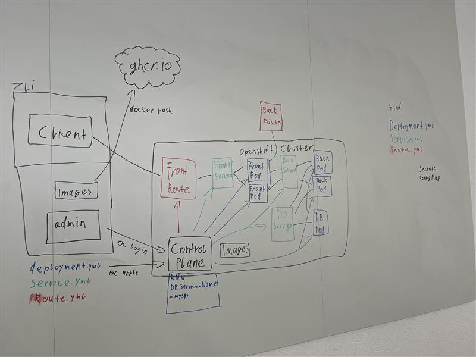

Umfassender Überblick: Cloud- und Container-Technologien
Block 1: Grundlagen der Cloud
Wie ist der Begriff Cloud entstanden? Wieso heisst es Cloud?
Der Begriff "Cloud" hat seinen Ursprung in der Netzwerktechnik. In frühen Netzwerkdiagrammen wurde oft eine stilisierte Wolke gezeichnet, um die komplexe und undurchsichtige Infrastruktur des Internets zu repräsentieren. Dieses Symbol stand dafür, dass die dahinterliegenden Details – wie Serverstandorte oder -konfigurationen – für den Endnutzer irrelevant sind. So symbolisiert die „Cloud“ heute die Abstraktion und den verteilten Charakter moderner IT-Infrastrukturen.
Beispiel: In Architekturdiagrammen wird häufig einfach ein Wolkensymbol verwendet, um zu verdeutlichen, dass Daten oder Anwendungen in einer globalen, virtuellen Umgebung gehostet werden.
Wie wird der Begriff Cloud definiert, z.B. gemäss NIST?
Nach der Definition des National Institute of Standards and Technology (NIST) bezeichnet Cloud Computing ein Modell, das bedarfsgesteuerten Netzwerkzugriff auf einen gemeinsamen Pool konfigurierbarer Rechnerressourcen ermöglicht. Diese Ressourcen – wie Netzwerke, Server, Speicher, Anwendungen und Dienste – werden schnell bereitgestellt und freigegeben, oft nach dem Pay-as-you-go-Prinzip.
Welches sind die 5 Merkmale einer Cloud?
Die fünf wesentlichen Merkmale laut NIST sind:
- On-Demand Self-Service: Nutzer können Ressourcen wie Rechenleistung oder Speicherplatz automatisch nach Bedarf provisionieren.
- Broad Network Access: Dienste sind über standardisierte Netzwerkschnittstellen (z.B. Internet) zugänglich.
- Resource Pooling: Die Ressourcen werden in einem gemeinsamen Pool gebündelt und dynamisch mehreren Kunden zugewiesen.
- Rapid Elasticity: Ressourcen können schnell und flexibel hoch- oder heruntergefahren werden.
- Measured Service: Die Nutzung wird überwacht, gemessen und entsprechend abgerechnet (Pay-per-Use).
Welche Cloud Dienstleistungen kennen Sie?
Cloud-Dienstleistungen umfassen unter anderem:
- Infrastructure as a Service (IaaS): Bereitstellung von IT-Infrastruktur wie virtuelle Maschinen, Speicher und Netzwerke (z. B. AWS EC2, Azure Virtual Machines).
- Platform as a Service (PaaS): Entwicklungs- und Laufzeitumgebungen für Anwendungen (z. B. Google App Engine, Azure App Service).
- Software as a Service (SaaS): Fertige Softwareanwendungen, die über das Internet angeboten werden (z. B. Office 365, Salesforce).
- Function as a Service (FaaS): Ausführung einzelner Funktionen in einer serverlosen Umgebung (z. B. AWS Lambda, Azure Functions).
Welche Cloud Anbieter kennen Sie?
Bekannte Cloud-Anbieter sind unter anderem:
- Amazon Web Services (AWS)
- Microsoft Azure
- Google Cloud Platform (GCP)
- IBM Cloud
- Oracle Cloud
- Alibaba Cloud
Welche Cloud Deployment Modelle kennen Sie?
Gängige Cloud-Deployment-Modelle umfassen:
- Public Cloud: Dienste, die öffentlich über das Internet zugänglich sind.
- Private Cloud: Exklusive Cloud-Umgebungen, die von einem einzelnen Unternehmen betrieben werden.
- Hybrid Cloud: Kombination aus Public und Private Cloud, um das Beste aus beiden Welten zu nutzen.
- Community Cloud: Gemeinsame Infrastruktur, die von mehreren Organisationen mit ähnlichen Anforderungen geteilt wird.
- Multi-Cloud: Nutzung von Diensten mehrerer Cloud-Anbieter.
Was sind Cloud Service Modelle?
Cloud Service Modelle definieren, wie Cloud-Dienste bereitgestellt werden. Die drei primären Modelle sind:
- IaaS (Infrastructure as a Service): Bereitstellung von grundlegenden IT-Ressourcen.
- PaaS (Platform as a Service): Bereitstellung von Entwicklungsplattformen und -tools.
- SaaS (Software as a Service): Bereitstellung von kompletten Softwarelösungen über das Internet.
Weshalb soll ich Dienste aus der Cloud beziehen? Was sind die Vorteile?
Die Nutzung von Cloud-Diensten bietet zahlreiche Vorteile:
- Kosteneffizienz: Reduzierte Investitionskosten durch nutzungsabhängige Bezahlung.
- Flexibilität und Skalierbarkeit: Ressourcen können bei Bedarf schnell erweitert oder reduziert werden.
- Zugänglichkeit: Dienste sind ortsunabhängig über das Internet erreichbar.
- Wartungsarm: Der Anbieter übernimmt Wartung, Updates und Sicherheitsmanagement.
- Innovationsgeschwindigkeit: Schneller Zugang zu modernen Technologien und Tools.
Was sind die Nachteile?
Trotz der vielen Vorteile gibt es auch einige Nachteile:
- Sicherheitsbedenken: Datenschutz und Datensicherheit können problematisch sein, vor allem in Public Clouds.
- Abhängigkeit: Möglicher Vendor Lock-in, bei dem ein Wechsel des Anbieters schwierig wird.
- Internetabhängigkeit: Ohne stabile Internetverbindung sind die Dienste nicht erreichbar.
- Compliance-Probleme: Regulatorische Anforderungen und Datenhoheit können Herausforderungen darstellen.
Welche Dienstleistungen werden in Ihrem Betrieb On-Premise (eigenes Rechenzentrum) betrieben?
Viele Unternehmen betreiben kritische oder ältere Systeme weiterhin On-Premise, wie etwa:
- Interne Datenbanken und ERP-Systeme
- Eigene E-Mail- und Kommunikationsserver
- Datei- und Backup-Server
- Spezialisierte Anwendungen mit hohen Sicherheitsanforderungen
Beispiel: Ein Finanzunternehmen verarbeitet sensible Kundendaten in einem eigenen Rechenzentrum, um maximale Kontrolle über Sicherheitsmaßnahmen zu gewährleisten.
Wie werden technologische Beiträge in der Cloud geteilt bzw. zur Verfügung gestellt?
Technologische Beiträge werden in der Cloud über verschiedene Mechanismen geteilt:
- APIs und Webservices: Ermöglichen den Datenaustausch zwischen Anwendungen.
- Open Source Projekte: Viele Cloud-Technologien (z.B. Kubernetes, Docker) werden als Open Source entwickelt und geteilt.
- Marktplätze und App-Stores: Anbieter veröffentlichen ihre Services in speziellen Marktplätzen, in denen Nutzer Lösungen finden und abonnieren können.
- Container-Repositories: Plattformen wie Docker Hub oder GitHub Container Registry ermöglichen das Teilen von containerisierten Anwendungen.
Block 2: Vergleich führender Cloud-Anbieter
Wählen Sie mindestens drei der führenden Cloud-Anbieter aus (z. B. AWS, Azure, Google Cloud).
Für diesen Vergleich wählen wir folgende drei Anbieter:
- Amazon Web Services (AWS)
- Microsoft Azure
- Google Cloud Platform (GCP)
Stellen Sie die wichtigsten Dienstleistungen der ausgewählten Anbieter vor (z. B. Speicherlösungen, Datenbanken, AI/ML-Services, Netzwerkdienste).
Amazon Web Services (AWS):
- Speicherlösungen: Amazon S3 (Objektspeicherung) und EBS (Blockspeicher)
- Datenbanken: Amazon RDS, DynamoDB
- AI/ML-Services: Amazon SageMaker, Rekognition
- Netzwerkdienste: Amazon VPC, CloudFront
- Speicherlösungen: Azure Blob Storage, Azure Files
- Datenbanken: Azure SQL Database, Cosmos DB
- AI/ML-Services: Azure Machine Learning, Cognitive Services
- Netzwerkdienste: Azure Virtual Network, ExpressRoute
- Speicherlösungen: Google Cloud Storage, Persistent Disks
- Datenbanken: Cloud SQL, Firestore, Bigtable
- AI/ML-Services: AI Platform, AutoML
- Netzwerkdienste: Virtual Private Cloud (VPC), Cloud Load Balancing
Vergleichen Sie relevante Kriterien: Kostenstruktur, Skalierbarkeit, Sicherheit, Verfügbarkeit und Zuverlässigkeit, Kundensupport.
- Kostenstruktur: Alle Anbieter nutzen ein Pay-as-you-go-Modell. AWS bietet vielfältige Preismodelle, Azure profitiert von bestehenden Microsoft-Lizenzstrukturen, und GCP punktet häufig mit wettbewerbsfähigen Preisen.
- Skalierbarkeit: Dank Auto-Scaling und globaler Infrastruktur lassen sich Ressourcen flexibel anpassen. AWS und Azure haben umfangreiche automatische Skalierungsoptionen, während GCP dynamische Anpassungen unterstützt.
- Sicherheit: Alle Anbieter bieten umfassende Sicherheitsfeatures und Zertifizierungen (z.B. ISO, SOC). Unterschiede zeigen sich in spezifischen Sicherheitsdiensten und Compliance-Optionen.
- Verfügbarkeit und Zuverlässigkeit: Globale Rechenzentrumsnetzwerke und klare SLAs garantieren hohe Verfügbarkeiten. Multi-Region-Deployments sorgen für Redundanz.
- Kundensupport: AWS, Azure und GCP bieten verschiedene Support-Pläne – von Community-Support bis zu Premium-Support-Services.
Block 3: Container-Technologie vs. Virtuelle Server
Was ist Container-Technologie oder Container-Virtualisierung?
Container-Technologie ermöglicht es, Anwendungen zusammen mit allen benötigten Abhängigkeiten in einem isolierten, portablen Container zu verpacken. Container teilen sich den Kernel des Host-Systems und bieten dadurch eine leichtgewichtige Alternative zu herkömmlichen virtuellen Maschinen.
Beispiel: Docker ist eine weit verbreitete Container-Plattform, die Entwicklern ermöglicht, Anwendungen in standardisierten Containern zu betreiben.
Was sind die Vor- und Nachteile der Container-Technologie zu virtuellen Servern (VM)?
Vorteile:
- Schneller Start: Container starten in wenigen Sekunden.
- Ressourceneffizienz: Geringerer Overhead, da der Kernel geteilt wird.
- Portabilität: Container laufen konsistent in verschiedenen Umgebungen.
- Sicherheitsaspekte: Weniger Isolation als bei vollständigen VMs.
- Kernel-Abhängigkeit: Container sind auf den Host-Kernel angewiesen, was Kompatibilitätsfragen aufwerfen kann.
Welche Produkte kennen Sie im Zusammenhang mit virtuellen Servern und Container?
Virtuelle Server:
- VMware vSphere
- Microsoft Hyper-V
- KVM (Kernel-based Virtual Machine)
- Docker
- containerd
- rkt (Rocket)
- Kubernetes (zur Orchestrierung)
Wie unterscheiden sich die Technologien VM und Container in Bezug auf Bereitstellung, Speicherplatz, Portabilität, Effizienz und Betriebssystem (Kernel)?
- Bereitstellung: VMs benötigen ein komplettes Betriebssystem, während Container nahezu sofort starten.
- Speicherplatz: Container sind meist deutlich kleiner, da sie nur die notwendigen Bibliotheken enthalten.
- Portabilität: Container können problemlos zwischen verschiedenen Umgebungen verschoben werden, solange eine Container-Laufzeit vorhanden ist.
- Effizienz: Container haben geringeren Overhead, da sie den Host-Kernel nutzen.
- Betriebssystem: VMs besitzen jeweils einen eigenen Kernel; Container teilen sich den Kernel des Hosts.
Können virtuelle Server immer durch Container ersetzt werden?
Nicht immer. Während Container für moderne, microservice-basierte Architekturen ideal sind, benötigen manche Anwendungen – insbesondere ältere oder sicherheitskritische Systeme – die vollständige Isolation, die VMs bieten.
Was ist der Unterschied zwischen Self-Managed und Fully Managed? Notieren Sie sich die wichtigsten Merkmale und diskutieren Sie die Ergebnisse in der Gruppe.
Self-Managed:
- Der Nutzer ist für Installation, Konfiguration und Wartung selbst verantwortlich.
- Bietet mehr Flexibilität, erfordert jedoch tiefgehendes technisches Know-how.
- Der Anbieter übernimmt Verwaltung, Updates, Monitoring und Skalierung.
- Ermöglicht den Fokus auf die Kernanwendungen, reduziert aber die direkte Kontrolle.
Block 4: Container-Orchestrierung und Redis
Warum braucht man Container-Orchestrierung?
In Umgebungen mit vielen Containern über mehrere Hosts hinweg ist es notwendig, den Überblick zu behalten. Container-Orchestrierung automatisiert die Verwaltung, Skalierung, Verteilung und Fehlerbehebung der Container, was den Betrieb von komplexen Anwendungen vereinfacht.
Wie funktioniert Container-Orchestrierung?
Die Orchestrierung koordiniert den Einsatz von Containern, indem sie:
- Container auf verfügbare Ressourcen verteilt,
- den Zustand der Container überwacht,
- bei Bedarf neue Instanzen startet oder fehlerhafte ersetzt,
- und die Netzwerkkonnektivität sowie das Load-Balancing sicherstellt.
Welche Container-Orchestrierung Technologien kennen Sie?
Zu den bekannten Technologien zählen:
- Kubernetes
- Docker Swarm
- Apache Mesos
- Nomad
- OpenShift (auf Basis von Kubernetes)
Was versteht man unter "Scaling Containers"?
Scaling Containers bedeutet, die Anzahl der Container-Instanzen dynamisch an die aktuelle Last anzupassen – horizontal skalieren, um bei hoher Nachfrage mehr Instanzen zu starten, oder Instanzen zu reduzieren, wenn die Last sinkt.
Was gibt es für Deployment Strategien?
Gängige Deployment-Strategien sind:
- Rolling Updates: Kontinuierliche Aktualisierung der Anwendung in kleinen Schritten, um Ausfallzeiten zu minimieren.
- Blue-Green Deployment: Paralleler Betrieb von zwei Produktionsumgebungen, um nahtlose Übergänge zu ermöglichen.
- Canary Releases: Neue Versionen werden schrittweise an einen Teil der Nutzer ausgerollt, um Risiken zu minimieren.
- Immutable Deployment: Komplette Neuaufsetzung von Instanzen, ohne bestehende zu modifizieren, was Rollbacks erleichtert.
Was ist Redis?
Redis ist ein In-Memory-Datenspeicher, der als Datenbank, Cache und Message Broker dient. Es unterstützt diverse Datenstrukturen wie Strings, Listen, Sets und Hashes und ermöglicht so sehr schnelle Lese- und Schreibzugriffe.
Welche Ports werden genutzt?
Standardmäßig lauscht Redis auf Port 6379 für Client-Verbindungen. In Cluster-Konfigurationen können zusätzlich weitere Ports für interne Kommunikation genutzt werden.
Was ist die Bedeutung von ENV im DOCKERFILE?
Die ENV-Anweisung im Dockerfile dient dazu, Umgebungsvariablen festzulegen. Diese Variablen stehen dem Container zur Build-Zeit und Laufzeit zur Verfügung und können zur Konfiguration von Anwendungen (z. B. für Datenbankverbindungen oder API-Schlüssel) genutzt werden.
Bilder zu VM, Container, Docker Build und Orchestrierung

Abbildung 1: Vergleich von VMs, Containern und Volume Mounts.

Abbildung 2: Prozessablauf von docker build zu docker run und docker compose.

Abbildung 3: Beispielhafte Port-Mapping-Skizze für einen Docker-Container (WAN → 443 → 80).

Abbildung 4: OpenShift-Konfiguration mit Deployment, Service und Route (YAML).

Abbildung 5: Übersicht über eine OpenShift-Architektur mit Front- und Back-Routes, Control Plane und ghcr.io.
Notizen1
Docker run startet in der Regel nur einen einzelnen Container, während Docker compose mehrere Container gleichzeitig ausführen kann.
Deployment bedeutet in einer Kubernetes-Umgebung, dass Container (Pods) aufgesetzt werden, um Code auszuführen. Service agiert innerhalb des Clusters, um diese Container erreichbar zu machen.
- ✅ Deployment kümmert sich darum, dass Container korrekt laufen und bei Bedarf skaliert werden.
- ✅ Services stellen Verbindungen zwischen den Containern her und weisen ihnen stabile Namen zu.
- ✅ Routing leitet externe Anfragen an die richtigen Container weiter.

Abbildung: Weitere Notizen und Skizzen zu LB 1
Wichtige Aspekte und Fragestellungen
Im Folgenden finden Sie einige umformulierte Fragen und Antworten, die essenziell sind:
-
Frage: Wie gewährleisten Cloud-Anbieter ihre wirtschaftliche Rentabilität?
Antwort: Die "Economies of Scale" -
Frage: Welche grundlegenden Sicherheitsmechanismen stehen in Cloud-Diensten zur Verfügung?
Antwort: Zugangskontrolle,Identitätsmanagment, Authentifizierung und Autorisierung -
Frage: Nennen Sie eine Lösung, die als typisches Beispiel für Platform as a Service gilt.
Antwort: Heroku. -
Frage: Welcher Aspekt kann beim Cloud-Computing zum Problem werden?
Antwort: Keine Kontrolle über die Datenspeicherung / Eingeschränkte Kontrolle über die Datenablage. -
Frage: Mit welchem Befehl kann ein lokaler Klon eines Git-Repositories erstellt werden?
Antwort: git clone. -
Frage: Welchem Servicemodell wird das Hosting eines virtuellen Servers zugeordnet?
Antwort: IaaS (Infrastructure as a Service). -
Frage: Welche gängigen Bereitstellungsmodelle für Cloud-Services gibt es?
Antwort: IaaS, PaaS und SaaS. -
Frage: Welche der folgenden Lösungen ist keine Container-Laufzeitumgebung?
Antwort: Kubernetes (es ist eine Orchestrierungsplattform). -
Frage: Welche Behauptung ist im Kontext von IaaS nicht korrekt?
Antwort: Die Anwendung werden von einem Cloud Anbieter gehostet und den Kunden angeboten -
Frage: Welches Szenario stellt in der Regel kein großes Risiko für Cloud-Computing dar?
Antwort: Einzelne Hardware Defekte z.B kaputtes Netzteil oder sowas -
Frage: Auf welche technische Grundlage ist Cloud-Computing angewiesen?
Antwort: Virtualisierung. -
Frage: Nennen Sie einen bekannten Dienst, den die Google Cloud Platform bereitstellt.
Antwort: Kubernetes Engine GKE -
Frage: Welches Merkmal zählt nicht zu den grundlegenden Eigenschaften des Cloud-Computings?
Antwort: Content-Aware Network Scaling. -
Frage: In welchem Servicemodell ist der Einfluss auf die zugrunde liegende Infrastruktur am geringsten?
Antwort: SaaS. -
Frage: Welche Art der Verwaltung ist bei den meisten Cloud-Plattformen unüblich?
Antwort: Native Desktop-Anwendungen. / über die Desktop Applikation -
Frage: Welche Herausforderung kann für Unternehmen beim Einstieg in Cloud-Technologien entstehen?
Antwort: Sehr hohe Komplexität -
Frage: Wie kann man Cloud-Computing kurz und knapp definieren?
Antwort: Bereitstellung von Computerdienstleistungen -
Frage: Welche Komponenten werden aus Kundensicht typischerweise durch Cloud Computing abgelöst?
Antwort: Alle genannten Punkte -
Frage: Welches der folgenden Konzepte zählt nicht zu den üblichen Cloud-Bereitstellungsmodellen?
Antwort: Segregated Cloud. -
Frage: Welche Leistung wird üblicherweise nicht als Cloud-Service angeboten?
Antwort: Virtuelle Realität (VR).